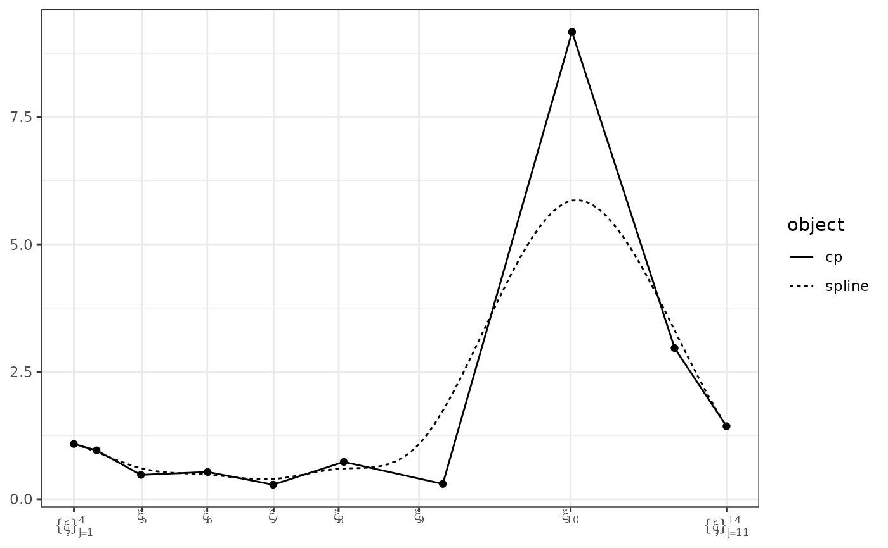

Generate data.frames for interpolating and plotting a spline
function, given a cpr_cp or cpr_cn object.
Arguments
- x
a
cpr_cporcpr_cnobject.- margin
an integer identifying the marginal of the control net to slice along. Only used when working
xis acpr_cnobject.- at
point value for marginals not defined in the
margin. Only used whenxis acpr_cnobject. Expected input is a list of lengthlength(attr(x, "bspline_list")). Entries for elementsmarginalare ignored. If omitted, the midpoint between the boundary knots for each marginal is used.- n
the length of sequence to use for interpolating the spline function.
Details
A control polygon, cpr\_cp object, has a spline function f(x).
get_spline returns a list of two data.frame. The cp
element is a data.frame with the (x, y) coordinates control points and
the spline element is a data.frame with n rows for
interpolating f(x).
For a control net, cpr\_cn object, the return is the same as for a
cpr\_cp object, but conceptually different. Where a cpr\_cp
objects have a uni-variable spline function, cpr\_cn have
multi-variable spline surfaces. get_spline returns a "slice" of the
higher dimensional object. For example, consider a three-dimensional control
net defined on the unit cube with marginals x1, x2, and
x3. The implied spline surface is the function f(x1, x2, x3).
get_spline(x, margin = 2, at = list(0.2, NA, 0.5)) would
return the control polygon and spline surface for f(0.2, x, 0.5).
See get_surface for taking a two-dimensional slice of a
three-plus dimensional control net, or, for generating a useful data set for
plotting the surface of a two-dimensional control net.
Examples
data(spdg, package = "cpr")
## Extract the control polygon and spline for plotting. We'll use base R
## graphics for this example.
a_cp <- cp(pdg ~ bsplines(day, df = 10), data = spdg)
#> Warning: At least one x value >= max(bknots)
#> Warning: At least one x value >= max(bknots)
spline <- get_spline(a_cp)
plot(spline$x, spline$y, type = "b")
# compare to the plot.cpr_cp method
plot(a_cp, show_spline = TRUE)
